Magic: The Gathering Star Trek Review, Part 3 of 4 – White, Blue, & Black Cards
Space, the final frontier. These are the voyages of the starship Enterprise...as well as around 34 other new Spaceraft. Our continuing mission: To explore in detail the ramifications of newly-printed cardboard; to speculate upon their effects on formats such as Commander, Standard, & Modern; to boldly joke about the 43 new Creature types printed in this set unlikely ever to be seen again! Yes, Star Trek has arrived to Magic, and with it a host of new cards sure to shake things up. Most impactful is the full realization of Spacecraft as an Artifact subtype, more than doubling the number thusly printed. Today we're covering the set's white, blue, and black cards.
Star Trek officially releases to tabletop on November 13th, and on Magic: The Gathering Arena on November 10th.
White
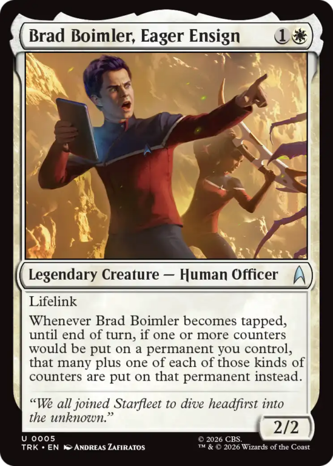
Credit: Wizards of the CoastBrad Boimler, Eager Ensign
Saffgor: The key thing to note about Brad is that as written (and clarified in the release notes) twiddling this gentleman results in cumulative replacement effects, meaning you can very readily get to a point where you're putting 3-5 extra counters on your permanents when you do so. That's compelling for such a low cost, and White has exceptional ways to do that, so I'm gonna mark this as an early runner for sleeper hit in the set, maybe worthy of a full article.
BPhillipYork: Adding more counters is nice, and with things like charge counters for Spacecraft it's relatively easy to tap him for some other benefit. With beam up you could easily beam him up, drop him back down and tap him again for something else, even just more charge counters on a Spacecraft, or mount something, or crew a Vehicle. He also plays really well with blink effects. Adding a bunch more counters onto a card is particularly dangerous with planeswalkers, since they can come out fully charged up, and create an emblem or use an ultimate ability right away.
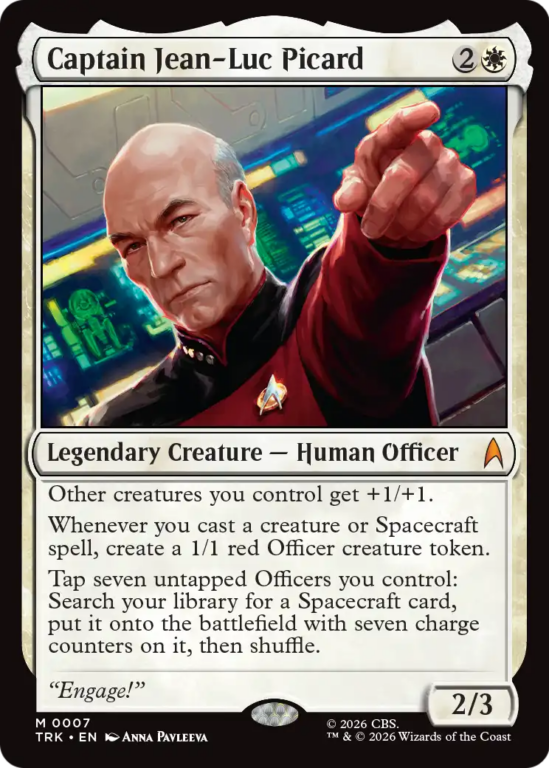
Credit: Wizards of the CoastCaptain Jean-Luc Picard
Saffgor: If you abstract Picard, he's essentially Creature-based Magda that finds Legendary Creatures, by way of chain-tutoring for The Seriema, or if you're feeling spicy, Deep Space 9. Between those two options you can build a spooky board, flicker for combo pieces, and more...but getting there is far more telegraphed & mana-intensive than Magda. He's strong, but probably not cEDH strong.
BPhillipYork: As a mono-white commander I'm not sure that's terribly exciting, but as an anthem for a creature heavy deck it's kind of nuts. To be honest, you've got a creature that makes token creatures and buffs all creatures and lets you fetch something that'll likely be turned into it's creature form pretty fast, which is all really useful in a 3-cost creature.
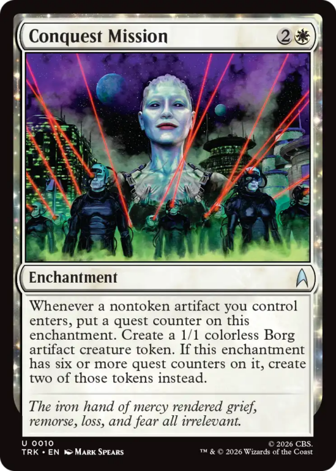
Credit: Wizards of the CoastConquest Mission
Saffgor: This is pretty easy to fuel up, and starts letting you go pretty wide pretty fast. In the decks that want Artifact Creature bodies, seems like a slam dunk.
BPhillipYork: This is just strong. Like, dumping out mana rocks gets you 1/1s. That's super dangerous amounts of easy token creature creation.
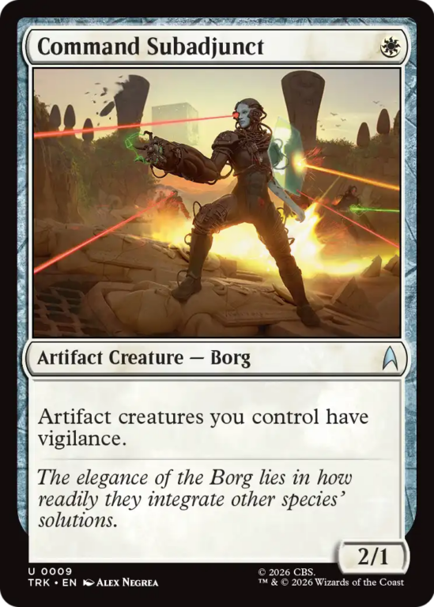
Credit: Wizards of the CoastCommand Subadjunct
Saffgor: This doesn't look exciting, but a lot of the best Artifact Creatures have tap abilities, and this allows you to swing out before pushing for that...or beat your own stax pieces which would otherwise prevent untapping.
BPhillipYork: Diet Sliver effect is a useful buff for your artifact creatures, but most likely you're just running this for yet another Borg.
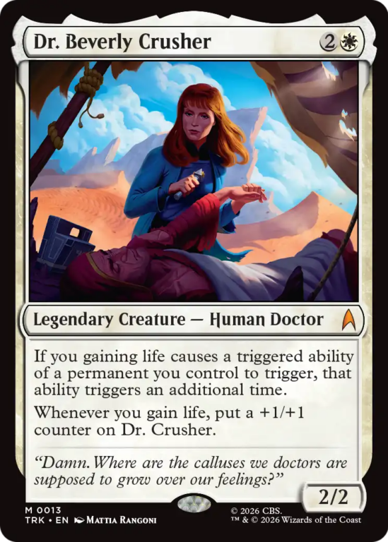
Credit: Wizards of the CoastDr. Beverly Crusher
Saffgor: I don't love this design. Sure she gets big, sure it doubles triggers, but this feels like the most whitebread way to build for a lifegain payoff. It's bland, and without tremendous depth.
BPhillipYork: Well double life gain triggers is useful for decks that run a lot of life gain triggers, and they are super easy to generate a ton of triggers off of. It's good leverage, you just need a plan for it.
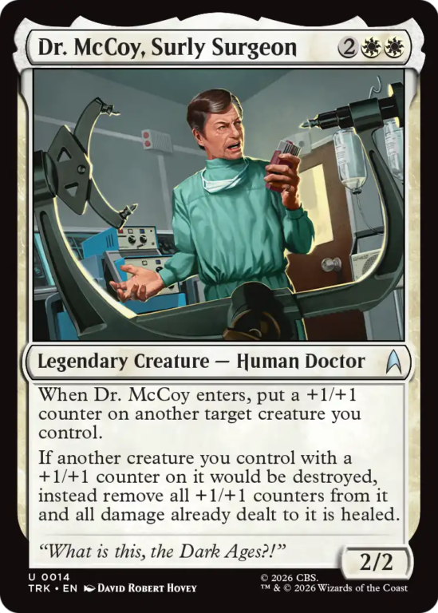
Credit: Wizards of the CoastDr. McCoy, Surly Surgeon
Saffgor: Helps counter-based decks beat boardwipes, yeah sure I'm down. It's a hair expensive, and would have preferred Flash, but I could see this working.
BPhillipYork: There's plenty of ways to leverage this to be useful, and if you have a way to distribute +1/+1 counters at instant speed it lets you avoid most removal. For 4 mana though and it removing all the +1/+1 counters it gets a little weird. Most decks that want +1/+1 counters want a lot of them, and this will remove all of them. It also prevents the destruction, rather than dying and coming back, which would be a lot more useful.
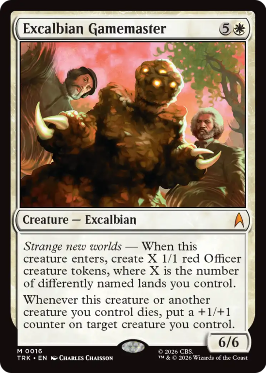
Credit: Wizards of the CoastExcalbian Gamemaster
Saffgor: 6 mana isn't where you want to be for any of this Creature's text, but it's a Mythic because it wins hard in limited. Meh.
BPhillipYork: This isn't super exciting. If you're maxing out on differently named lands, that's a lot of effort just to get a lot of 1/1s.
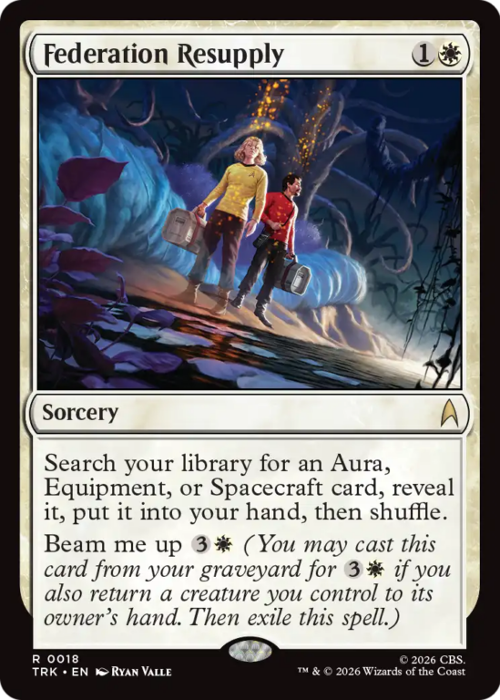
Credit: Wizards of the CoastFederation Resupply
Saffgor: Wow, they really kicked Open the Armory to the curb? This is absolutely tremendous, and even the self-bounce can help you double up on your enter effects, which White so often has. Amazing card, and you'll see this everywhere, although between the name and keyword reprinting it seems difficult for a card with such likely ubiquity.
BPhillipYork: There's not a ton of Equipment tutors so this is useful there, and pretty nice to also be able to grab an Aura or a Spacecraft. Tutors are pretty much always good, particularly ones you can use twice.
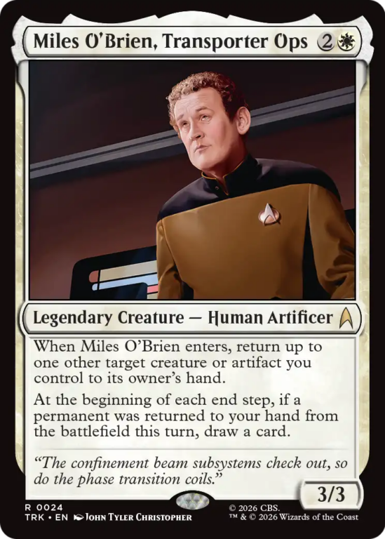
Credit: Wizards of the CoastMiles O'Brien, Transporter Ops
Saffgor: Self-bounce payoff makes sense in White, but I do worry the actual payoff of drawing a card is only okay, compared to the need to recast whatever's being bounced. Yes you can just do it with free Artifacts, but if Bennie Bracks, Zoologist has taught me anything it's that slow engines like this in White usually do less than you'd hope.
BPhillipYork: I like the interaction with beam me up, but there's not really enough ways to beam things up to make a deck around this, particularly in mono-white. So while I think you could build around this, I don't know that I would really recommend it.
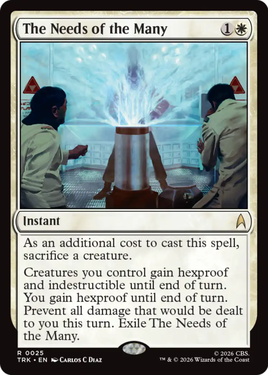
Credit: Wizards of the CoastThe Needs of the Many
Saffgor: A worse Everybody Lives!, and probably a worse Flare of Fortitude. No thanks.
BPhillipYork: This is pretty great. Having another source of this sort of effect makes it a lot more consistent in a 100 card deck, and the immunity to damage is pretty great with spells like Earthquake, letting you run some damage based mass-removal.
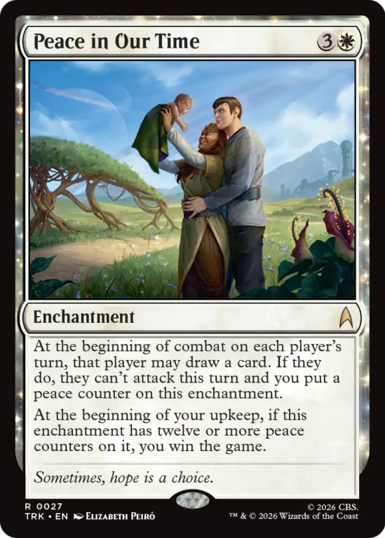
Credit: Wizards of the CoastPeace in Our Time
Saffgor: Well hello conspicuous win condition for the aforementioned Brad Boimler! The fact you can skip combat the turn this comes down is essential, but it being an upkeep win is what scares me. Could definitely work, but it's fragile.
BPhillipYork: This seems like it really won't work that well. Who is ever going to let it get to 12? Players will draw some cards early and then just start attacking you, or stop drawing the cards. There's definitely ways to proliferate, so you could get a few counters then turbo it out yourself, but that seems like a lot of steps for a weird win-con that can also just be destroyed.
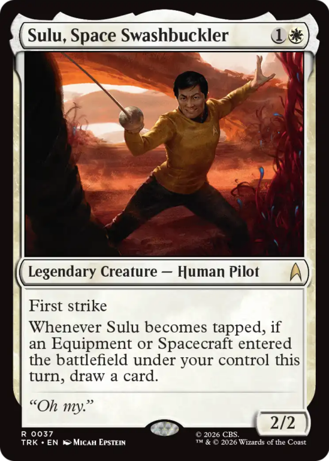
Credit: Wizards of the CoastSulu, Space Swashbuckler
Saffgor: As a huge fan of George Takei, I can tell you right now this card makes me a bit mad. That saying, 'oh my'—that's from an appearance on Howard Stern, and not any episode of Star Trek. To see it appear on the card for Sulu, a character he plays, is weird. Anyway, card is fine, it's a better but less interesting Brad Boimler.
BPhillipYork: This seems fairly weak for a pretty memorable moment in Star Trek.
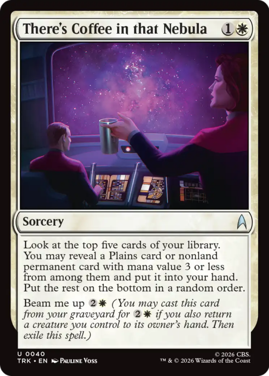
Credit: Wizards of the CoastThere's Coffee in that Nebula
Saffgor: This isn't too far off of being a White Stock Up, and given how good that card is I'm inclined to rate this pretty highly! Very neat card in decks with 3cmc or less combo pieces.
BPhillipYork: For Commander this is probably not going to rate, searching the top for a combo piece is probably insufficient and there are tons of better plains tutors out there, even if you can use it twice.
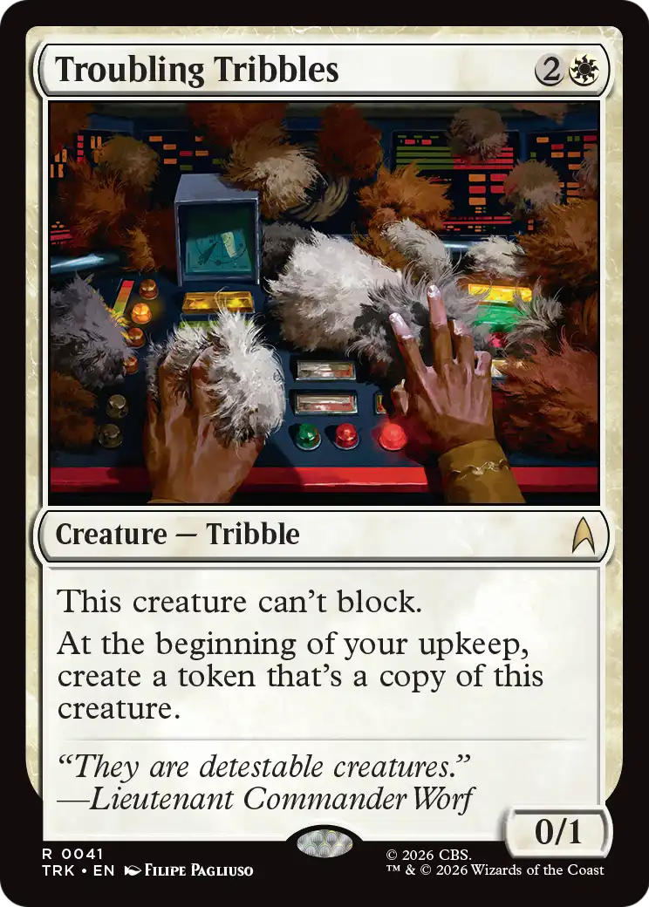
Credit: Wizards of the CoastTroubling Tribbles
Saffgor: Worse Scute Swarm, cannot bring myself to get excited about this.
BPhillipYork: Well that's fun. A nice reference, and for maybe life gain decks it could be useful, but 3 CMC is probably too much. If you could drop it on turn 2 I think that would make a big difference. Maybe if you're generating extra upkeeps or extra turns, but there's really more fun things to so this ends up sort of being just a meme card.
Blue
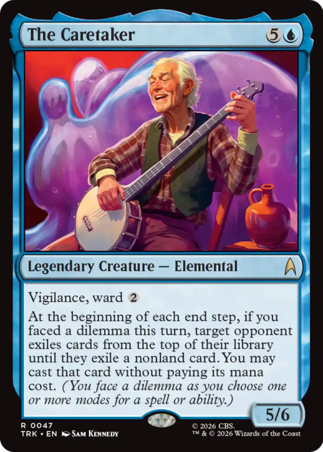
Credit: Wizards of the CoastThe Caretaker
Saffgor: This looks incredible until you look for repeatable means of facing dilemmas, and it's...scant. Arguably the most accessible is stuff like Pyramids, and that's not an exciting Magic card. This falls short until they print better Dilemma enablers.
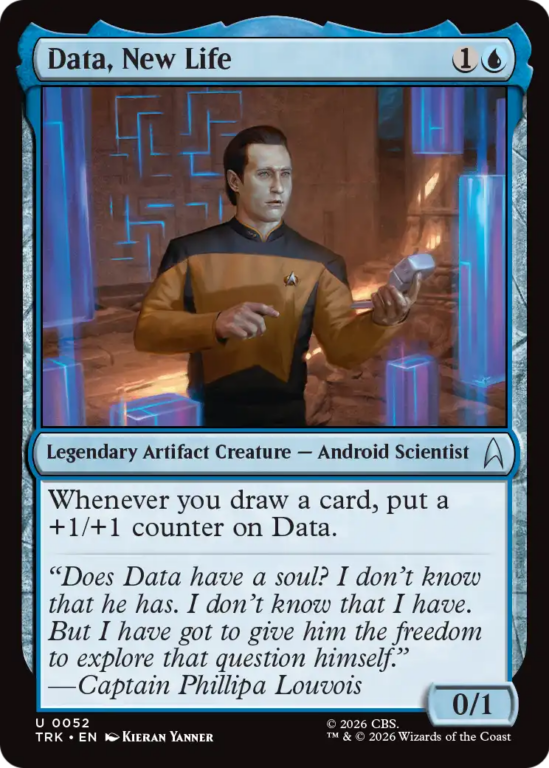
Credit: Wizards of the CoastData, New Life
Saffgor: This is cheap as hell for the effect, whoa. Gets out of hand fast, and comes down early enough to get out of hand. Legendary matters here, because if it weren't you could jam multiple turn 2/3 in a tempo shell in Standard, I reckon.
BPhillipYork: He's generally going to get decently big fast, but in Commander who really cares. No evasion, and what you have to draw about 30 cards before he's really going to be threatening, if you can draw 30 cards you can probably do something useful rather than just uh, swing out with a big creature. Maybe in a wheel deck.
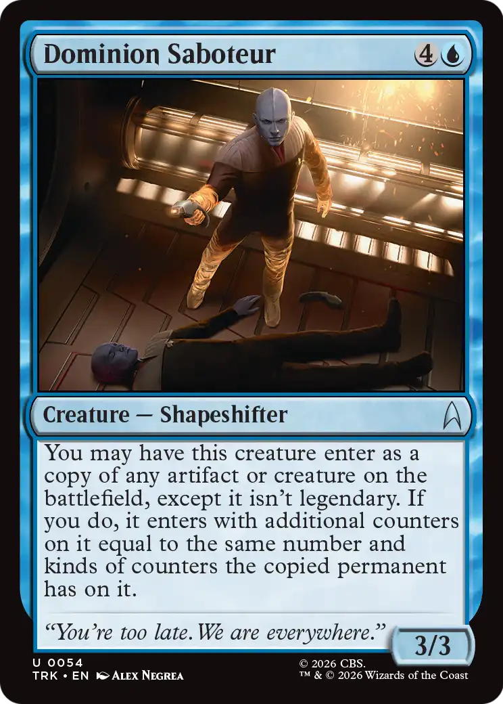
Credit: Wizards of the CoastDominion Saboteur
Saffgor: This is clearly meant to copy Spacecraft, but at 5 mana I just don't buy it. 4 would have been the sweet spot.
BPhillipYork: This is a neat twist on a copy spell. Artifact or creature and entering with counters does give you some interesting possibilities, so I think it is definitely useful to copy certain commanders or certain key artifacts, or if Time Vault was legal maybe, oh I see they oracled that again. But even so, it's a bit of an expansion to be nonlegendary and have counters, which is useful.
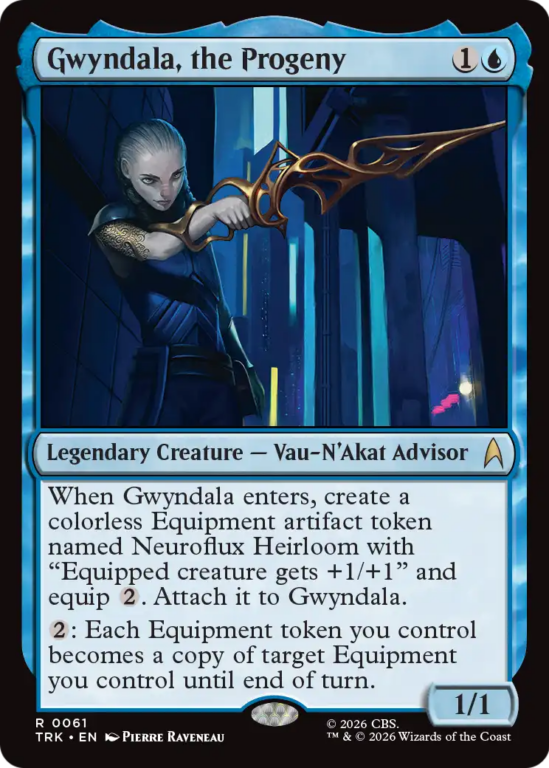
Credit: Wizards of the CoastGwyndala, the Progeny
Saffgor: So this is why all those Communicators copy themselves! Gwyndala is a frontrunner for the most popular Monocolor option in the set, and it's not hard to see why; she makes fantastic use of blink, token copiers, and even some weird cards like Brass Knuckles, all in service of suiting up with multiple copies of Colossus Hammer or Swords of X & Y. She's great, and probably worth a full article of coverage!
BPhillipYork: I don't know what exactly you'd copy to make this really good. Paying 4 mana to get a temporary copy of an Equipment is probably not really going to do that much that 1 copy of it wouldn't do, and it's all kinds of slow and telegraphed, itching for removal.
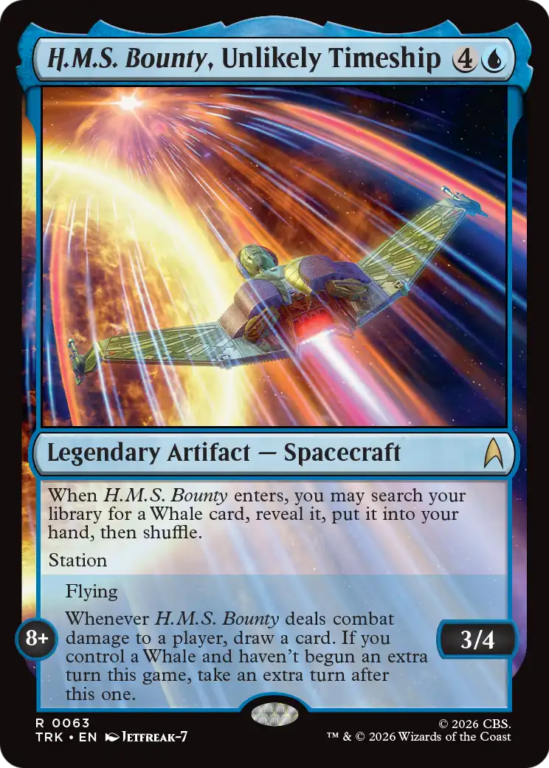
Credit: Wizards of the CoastH.M.S. Bounty, Unlikely Timeship
Saffgor: We've arrived to my favorite card of the set, and of all things it's a Whale typal enabler...or more appropriately, a 'deck with Whales' enabler. I covered the Bounty in one of our most extensive Commander Focus articles in a while, but to put it bluntly there's a shocking depth to the Whale Creature type, and being able to find them allows for one of the most fun, compelling, & resilient combo lists I've played in years. This card sparks joy.
BPhillipYork: Whale tutor is fun, and taking an extra turn is fun also. Pretty easy to get the extra turn with just a random changeling. Well templated to avoid any kind of abuse.
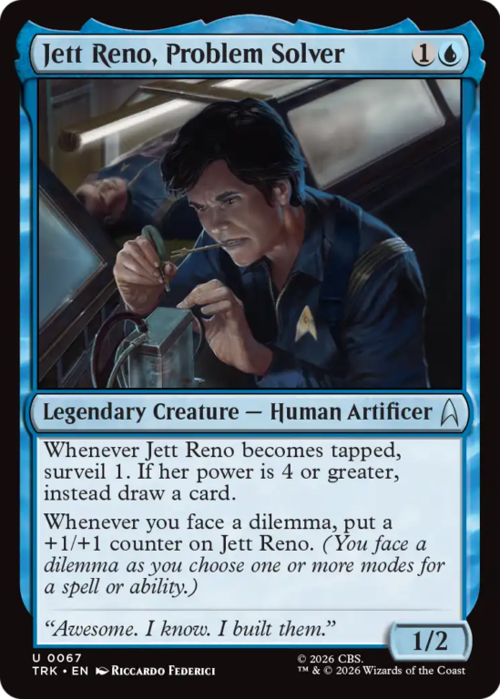
Credit: Wizards of the CoastJett Reno, Problem Solver
Saffgor: Jett does some neat things by way of the few repeatable Dilemma enablers, and she can be a solid value engine in any deck looking for a way to Station. Quietly pretty decent, and has some weird combos with Agatha's Soul Cauldron & Cryptic Trilobite.
BPhillipYork: This is fine for like, dilemma deck I guess, other than that, it's really meh.
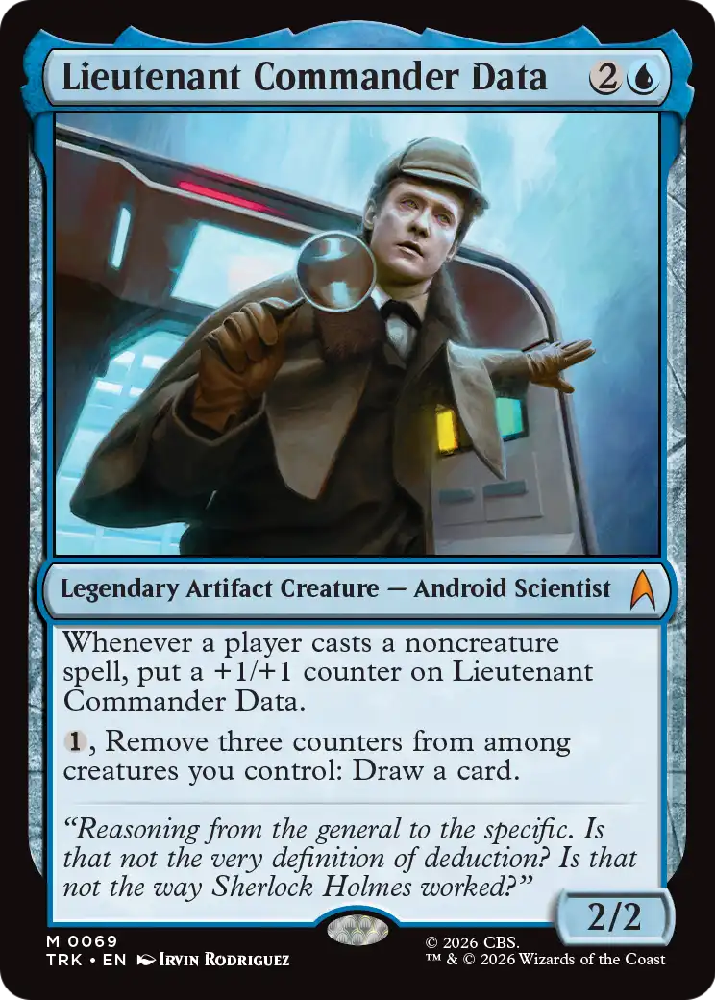
Credit: Wizards of the CoastLieutenant Commander Data
Saffgor: In Star Trek, we received a fantastic 3 mana Creature value engine I expect to see play in a number of formats. Her name is Nyota Uhura, Communications. In a huge twist I'm actually pretty bearish on this version of Data, because unlike a Cabbage Merchant or Remora, you need to actually pay for your value. I prefer mine incidental, thanks very much, but Data does have one upside as a Saga Creature/Persist Commander, and I think if you play him in the Command Zone you can have a good time there.
BPhillipYork: He's probably going to get big fast, and you can make him less threatening but turning that into draw. It's a pretty fun mechanic, that also makes for a decent, though similarly non-evasive beater.
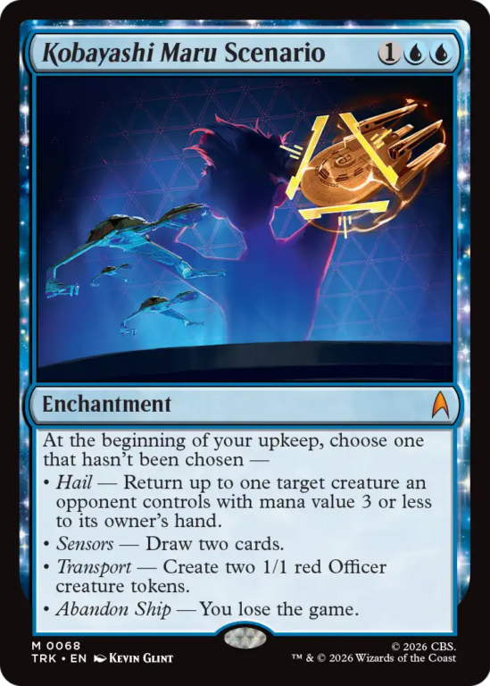
Credit: Wizards of the CoastKobayashi Maru Scenario
Saffgor: The fact this is being printed into a Standard with Harmless Offering and a new card we'll talk about shortly is interesting. I think this can...actually get there, so long as the format slows down on aggro enough to allow for this to hit the final option. Four dilemmas too, that's something to note.
BPhillipYork: Not sure I love the proliferation of "lose the game" type enchantments into more colors. There is a sort of neat thing with trading or giving these away, and blue has Donate already and there's getting to be more and more ways to hand out permanent "gifts", which, this is one where you'd probably want to look it in the mouth. It's also such an iconic thing from Star Trek they sort of had to do it.
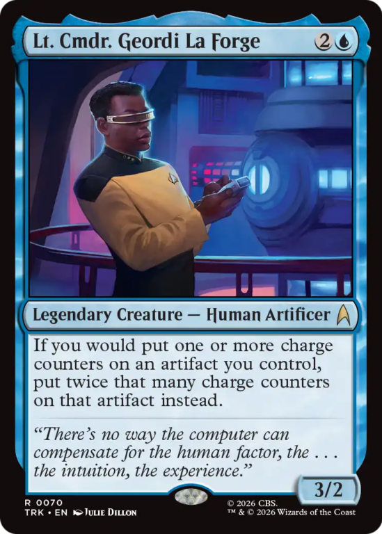
Credit: Wizards of the CoastLt. Cmdr. Geordi La Forge
Saffgor: In the right deck this is a great accelerant, but there's a lot of similar effects which do more for around the same cost.
BPhillipYork: This is just a huge enabler for a charge counter deck, really kind of dangerous and there are a lot of charge counters around. As a commander you probably can't really leverage it enough in mono-blue, but as just an additional card these sorts of decks. Pretty fun for just pure Spaceship tribal.
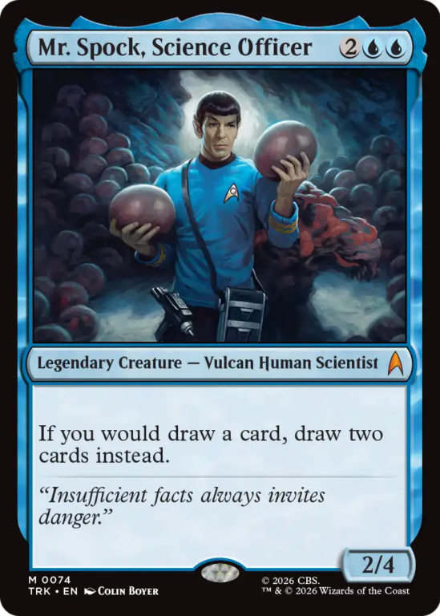
Credit: Wizards of the CoastMr. Spock, Science Officer
Saffgor: Teferi's Ageless Insight, but unlocked and on a body. Yeah, I'm down for that; they managed to make this card exciting with just a single line of text.
BPhillipYork: Okay well that's a decent draw card, fat butt so resistant to damage. Doubling draw is nice but it's often a bit of a win-more kind of thing, unless you have a deck that has a way to really use all those cards you're drawing. Otherwise it really just ends up being card selection.
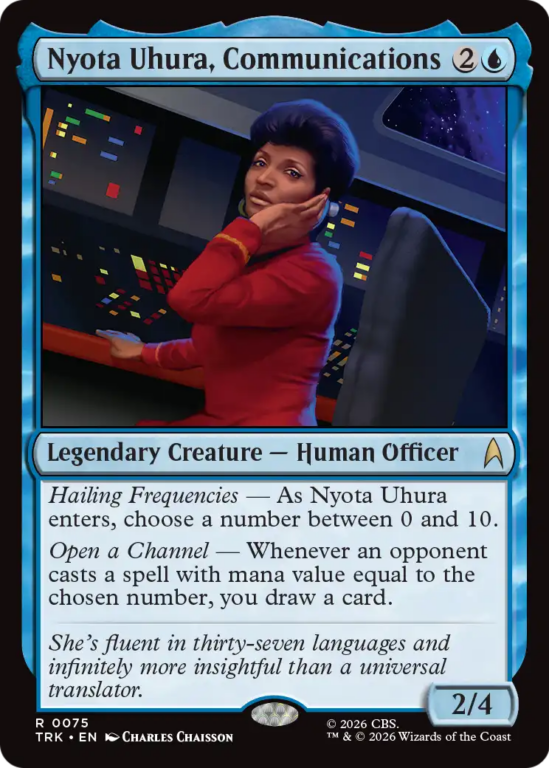
Credit: Wizards of the CoastNyota Uhura, Communications
Saffgor: Talion's little sister, and she's looking great! Blocks a lot of attackers profitably in the Tymna matchup, cheaper, and while you do lose the P/T mattering I'm not especially sad about that. If you wanted to play Pollywog Prodigy, but didn't have the bodies to get it to ~3 power, Uhura is here to save you, and look great doing it.
BPhillipYork: There's getting to be an awful lot of cards like this, letting you choose and locking down numbers, and potentially you end up drawing all the time. Which is good. Most of the time, at a good table, throwing this on like 1 is going to net you a lot of cards, though you have to know your table.
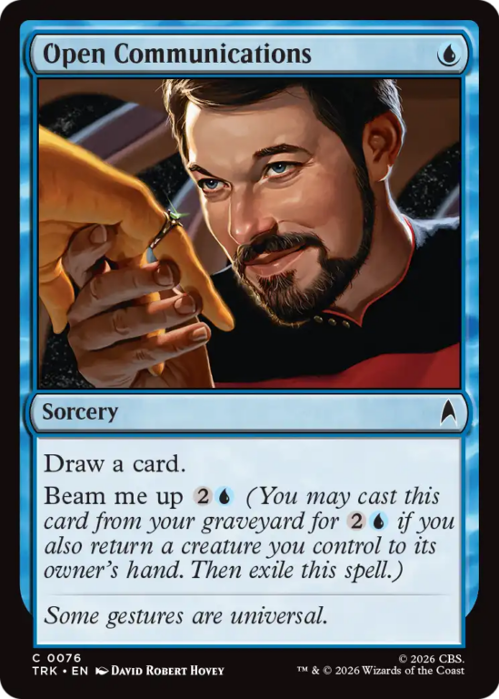
Credit: Wizards of the CoastOpen Communications
Saffgor: The cost of entry for a self-bounce here is so, so low, and if you're in a playgroup where Darksteel Mutation and the like run rampant, please consider playing this card. It will rarely feel amazing, but never feel bad.
BPhillipYork: This seems fine. It's probably almost just another cantrip most of the time and you probably won't end up beaming it up, so for cantrip decks it's always nice to have more ways, especially given how many cards there are that generate mana off casts now.
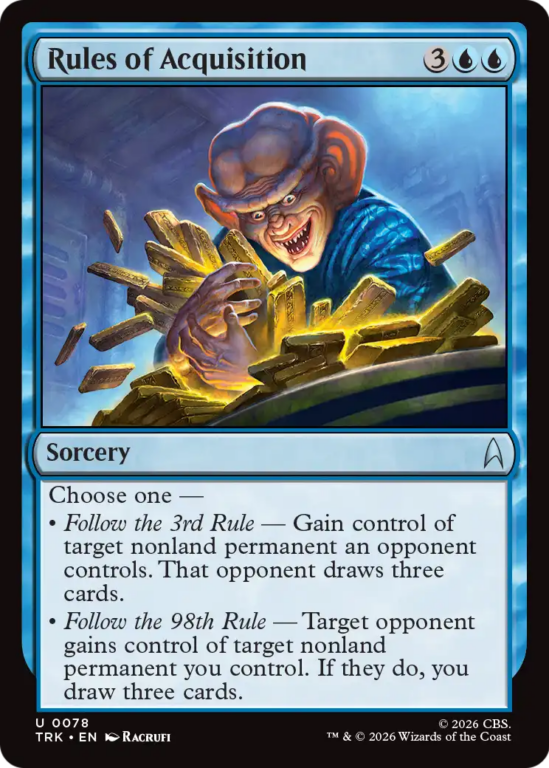
Credit: Wizards of the CoastRules of Acquisition
Saffgor: 2 of this, 4 Harmless Offering, Kobayashi Maru Scenario. Standard. Someone's gotta make it work.
BPhillipYork: I feel like they could've made a whole set out of these, and it would've been a fun set. Ferengi Secret Lair. But I think the real winner here is the give away, since you can give away something value less or even dangerous and get draw, which is pretty nice. It's slow but fun.
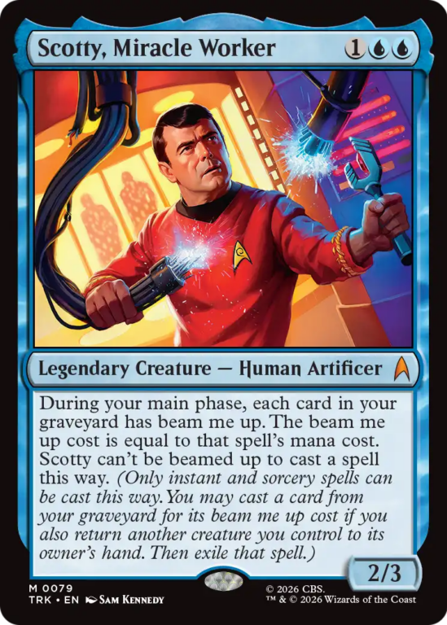
Credit: Wizards of the CoastScotty, Miracle Worker
Saffgor: This is some of the worst templating I've seen for what is ostensibly a clear effect. The reason everything gains Beam Me Up is so it works with Adventures, essentially, but that use case isn't worth overcomplicating the effect. Card is fine, wording is atrocious.
BPhillipYork: I'm a little shocked he doesn't give cards miracle in some way, though that isn't really a set mechanic. Beam me up all the time is great if you're doing something abusive with it, constantly returning something for value. With artifact draw and cost reduction all over blue this could easily be a combo enabler in the Command Zone, that also generates a ton of value while you're getting to the combo stage.
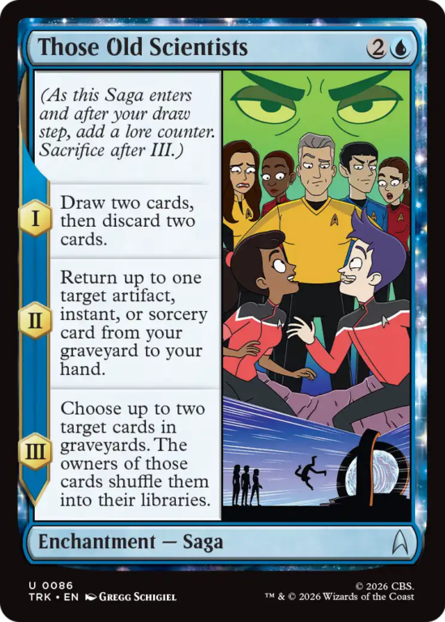
Credit: Wizards of the CoastThose Old Scientists
Saffgor: I think the art style on this as the main printing for a card is unacceptable. Just, straight up, this isn't okay as the only art for the card to come in. Imagine if this was a staple, especially given other characters from the show have been rendered in Magic's normal style.
BPhillipYork: In terms of power level this is fine, frankly Lower Decks was the best Star Trek show, and I'm sad it isn't on more cards.
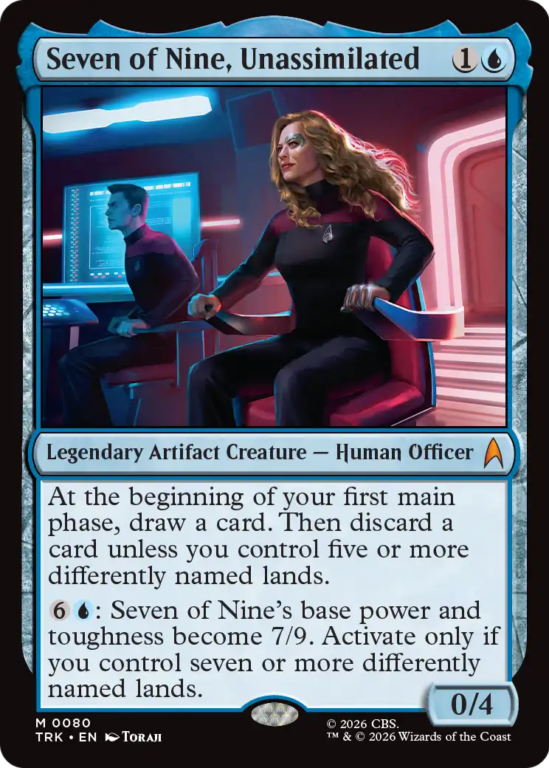
Credit: Wizards of the CoastSeven of Nine, Unassimilated
Saffgor: This being a Mythic is very odd to me, because the card seems...bad? Like, not even mediocre, straight up bad. 0/4 that loots until you're into the late game isn't where we are right now, in terms of game pace, and the Melvin-esque 7/9 ability reeks of an forced joke.
BPhillipYork: Okay, this is fun I guess. I mean it's card draw on 2 mana which is selection really, but discard can be leveraged decently, and then you can make it big, though like who cares. I'm not sure why they didn't go with the iconic catsuit though, the one that got Obama elected.
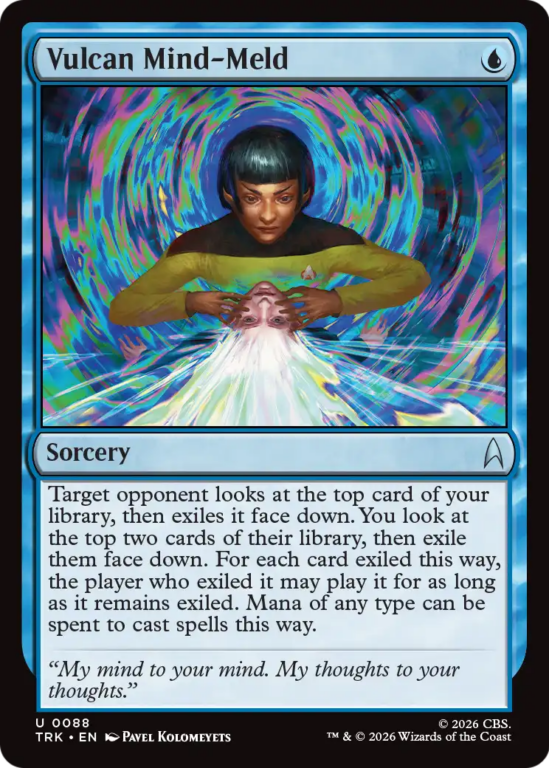
Credit: Wizards of the CoastVulcan Mind-Meld
Saffgor: Really fantastic with anything that cares about casting from outside of your hand, or in Commander where you can dole out a card to someone you politic with. I love this card, and while it isn't meant for 60-card formats that's okay.
BPhillipYork: This is kind of dangerous, I mean you're really giving away 2 cards for one, but there's lots of ways to lock out casting from exile, or benefit from casting from exile that make it probably worth while.
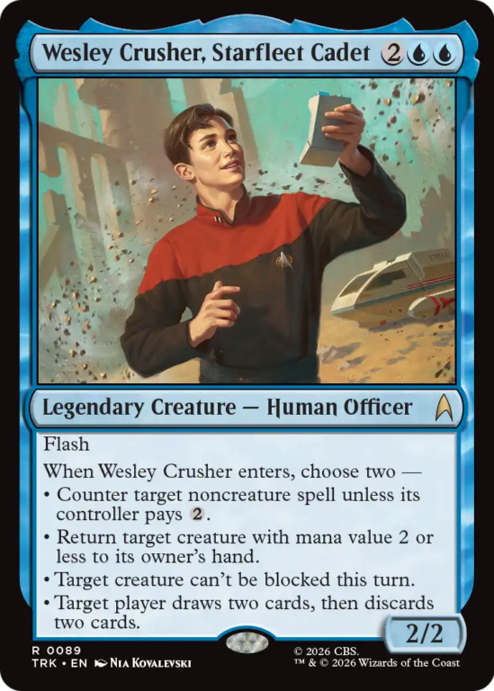
Credit: Wizards of the CoastWesley Crusher, Starfleet Cadet
Saffgor: I spent many nights as a tween watching TableTop with Wil Wheaton, so forgive me my affection for the man, where so many lack it. Wesley's pretty neat! You get a Cryptic Command-ish on a body that faces a Dilemma on ETB and helps you tempo forward.
BPhillipYork: This seems fine, basically an already existing card that is now on a body. There's a bit of modality that could be useful here, but there's probably two modes (top two) that are the big plays almost all the time, though draw discard isn't too bad.
Black
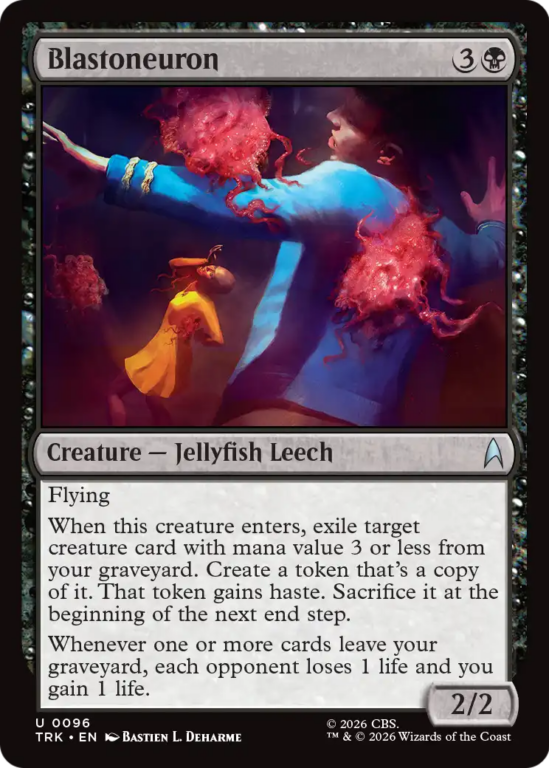
Credit: Wizards of the CoastBlastoneuron
Saffgor: Lot of clones that cost 3 or less, you know. I think there's a reasonable Pioneer deck which runs this and cheap clones to force a win by stacking Blastoneurons, but that might be too cute. Card does seem strong though, and there's reasonable targets across formats.
BPhillipYork: The trigger is huge there, the animation of a token is fine, though usually reanimation decks want to recur things repeatedly, as opposed to a single shot.
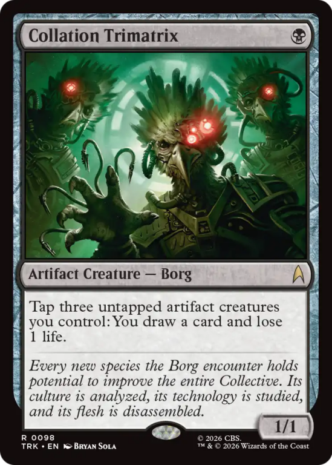
Credit: Wizards of the CoastCollation Trimatrix
Saffgor: Remember that Vigilance granter earlier up? This is his buddy. Cryptbreaker is the closest analogy, and that card was pretty good back in the day.
BPhillipYork: Wow. That's pretty bonkers. Amazing for token artifact creature decks, Borg decks, some Phyrexian decks, Myr decks, etc..
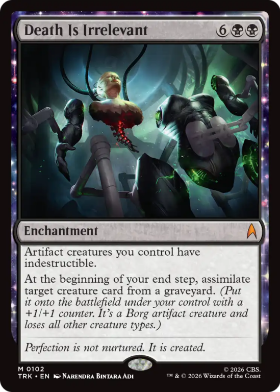
Credit: Wizards of the CoastDeath is Irrelevant
Saffgor: You're only ever cheating this out, but if you do it presents some fair-but-fun problems for the table. Hardcasting this is a pipe dream though.
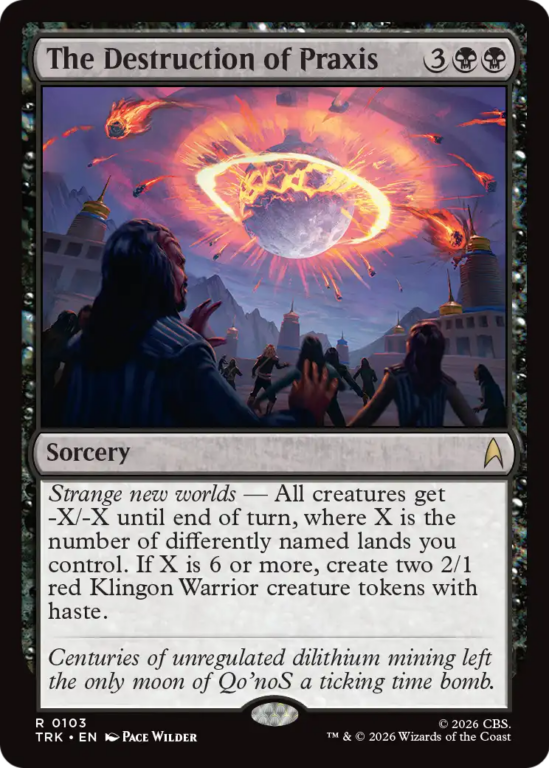
Credit: Wizards of the CoastThe Destruction of Praxis
Saffgor: This seems pretty darn good in 60-card formats, and getting to that 6+ effect isn't hard even in Standard.
BPhillipYork: Board clear that is -X/-X is really good since it tends to sweep right past all the normal board protection cards. Keying it off your land types is fine, you generally won't need to hit more than -4 or -5 toughness in any case.
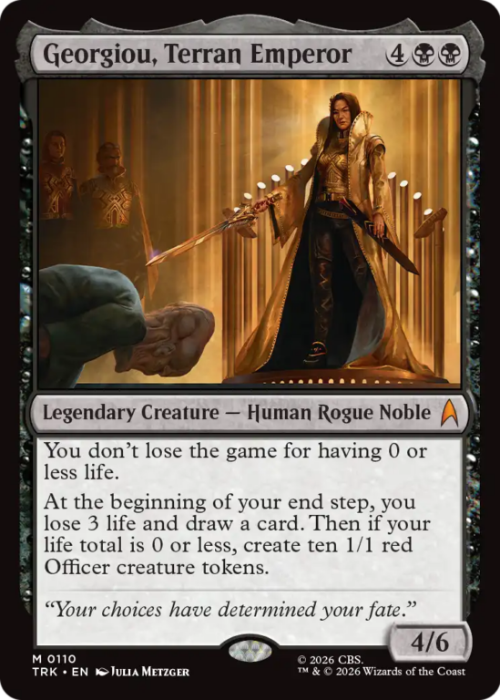
Credit: Wizards of the CoastGeorgiou, Terran Emperor
Saffgor: Obvious funny card with this is as a way to draw the deck with Ad Nauseam, but there's a lot of ways to break a Lich effect in the Command Zone. At 6 mana it's a hair expensive and fragile, but I see the appeal.
BPhillipYork: I love the idea of a balls out deck that wants to sit around at 0 or less life and generating hordes of 1/1 red Officer creature tokens. I mean, they aren't particularly good tokens but it's such a funny deck idea, so inherently bad, that it's kind of awesome.
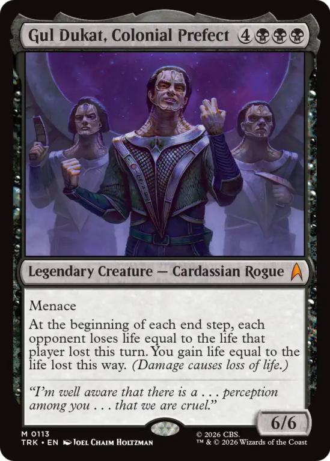
Credit: Wizards of the CoastGul Dukat, Colonial Prefect
Saffgor: Functionally double your damage, then gain a ton of life—this is a Timmy payoff if ever I saw one. Three Black pips does make it appealing for devotion purposes, though.
BPhillipYork: Well that's a brutal life loss / gain trigger. For 7 mana it would have to be, but even so, just something like Pestilence is going to go insane with this. I would say it's almost too dangerous, especially since it's every end step. Still throwing this down and going unanswered will probably end the game pretty quickly.
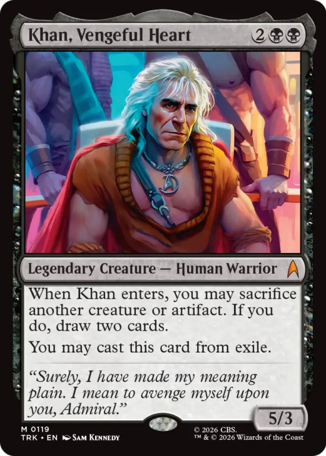
Credit: Wizards of the CoastKhan, Vengeful Heart
Saffgor: As someone who greatly enjoys Eternal Scourge (It's among my three favorite Magic cards), seeing another card of its ilk brings me great joy. Thank goodness Khan isn't Green, as that does restrict his utility with Food Chain lines, but even so he remains a powerful combo piece, and likely the best card like Scourge to date.
BPhillipYork: Cards that can be cast from exile are really kind of weird. Weird tricks with Food Chain are the default sort of BS here, but black also has some triggers from exile that this guy could be used to abuse. At 4 mana it's really tricky to anything aside from Food Chain unless you're willing to invest in some cost reduction.
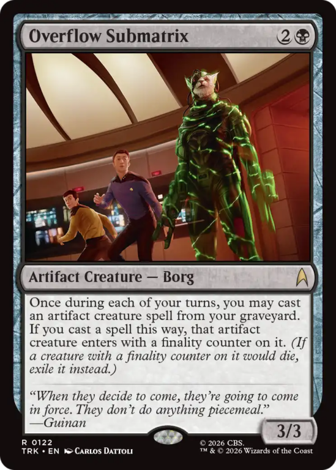
Credit: Wizards of the CoastOverflow Submatrix
Saffgor: Extremely safe design with a lot of guardrails, but the fact some aggro Artifact Creature deck might exist in Standard means this could see play at 1-2 copies.
BPhillipYork: Well recurring your lost creatures is always useful, and it's another Borg.
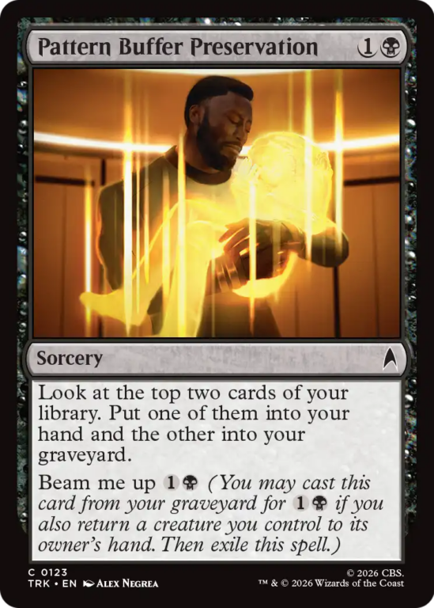
Credit: Wizards of the CoastPattern Buffer Preservation
Saffgor: Quietly among the best Black cards in the set, as a Think Twice with selection that resets a body to hand is nothing to scoff at. Black doesn't get a ton of self-bounce, and between this and Dark Matter Manipulator/Stitcher's Supplier you can get stuff in the yard quite fast.
BPhillipYork: This is solid card draw / selection that can be used twice. Though black now has the 3 mana, draw 2, and your opponents lose life, which is probably just stronger than this, unless you want things in your yard to reanimate them.
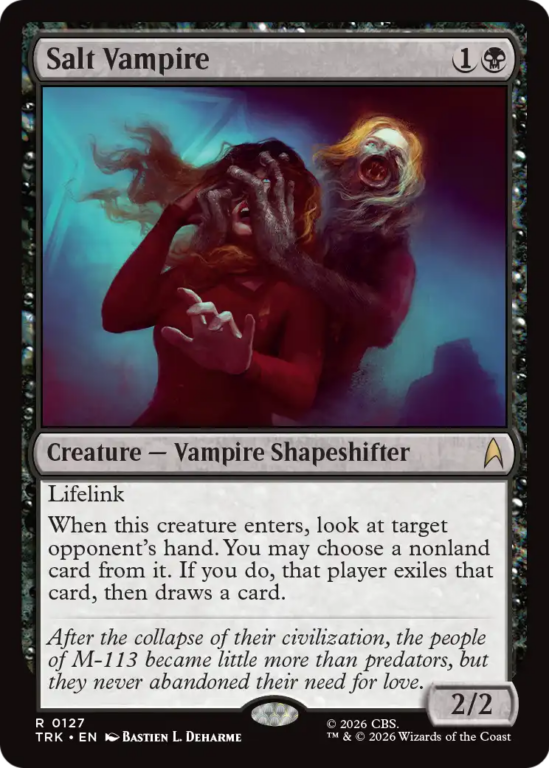
Credit: Wizards of the CoastSalt Vampire
Saffgor: I mean, sure this seems fine enough for UB midrange in Standard. Not exciting but I won't sneeze at a mini-Thought-Knot Seer.
BPhillipYork: This episode terrified me as a 6 year old. In Magic, in the TYOOL 2026, it's not very scary. At least in Commander, in other formats its probably solid.
Commander
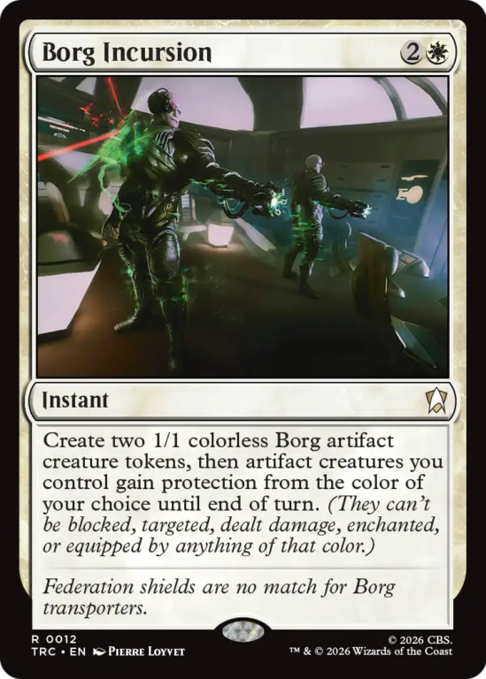
Credit: Wizards of the CoastBorg Incursion
Saffgor: This compares to Earthbend for its archetype of Artifact Creatures, and to that end it's alright. Used offensively it can make you unblockable, used defensively it buffers an attack, it's...alright. No indestructible is my worry, there.
BPhillipYork: That's really solid way of making more Borg, and then making your Borg unblockable, or protecting them from a non-destroying board wipe, which, okay, are the most uncommon and least good board wipes. So it's mostly just to swing through, which is still good.
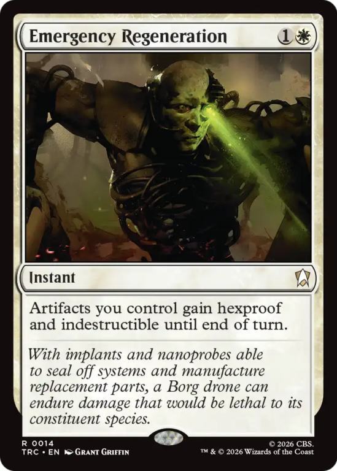
Credit: Wizards of the CoastEmergency Regeneration
Saffgor: Speaking of Indestructible, hey there mini-Heroic Intervention! In decks where this is better than something like a Faith's Reward, it's going to feel quite good, but White has plenty of ways to avoid a board wipe.
BPhillipYork: This is another protect your Borg army, or whatever artifact army card.
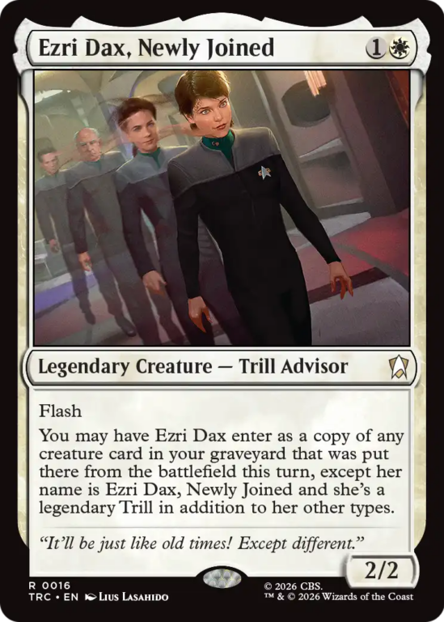
Credit: Wizards of the CoastEzri Dax, Newly Joined
Saffgor: The first White clone, and wow, it's a good one. This provides infinite sacrifice fodder alongside a Sun Titan effect—of which there are many—and more than that just helps you preserve hatebear effects after they're answered. Kill my Drannith Magistrate? Now Dax is Drannith Magistrate. I don't want to be the guy who goes 'this goes in every White deck' but it goes in a lot of White decks, trust me.
BPhillipYork: This is nice, kind of weird, and a neat way of representing the whole Trill thing. It's a reactive clone though, so it's sort of a weird thing, where you need to know you creature will die and then you're holding up mana to react, which seems like a lot of moving steps.
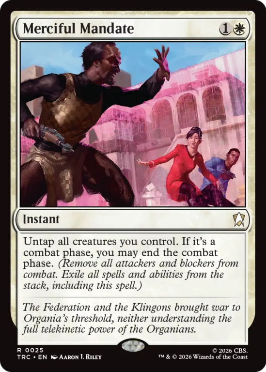
Credit: Wizards of the CoastMerciful Mandate
Saffgor: Mass untap that's also a Fog? Sure, yeah this has applications. In any list where To Arms! makes sense, this also gets a slot.
BPhillipYork: This is a neat Fog. Weird in the way that white has of occasionally having peaceful sorts of interaction. Maybe just use it to untap all your Myr and tap them for mana again, I dunno.
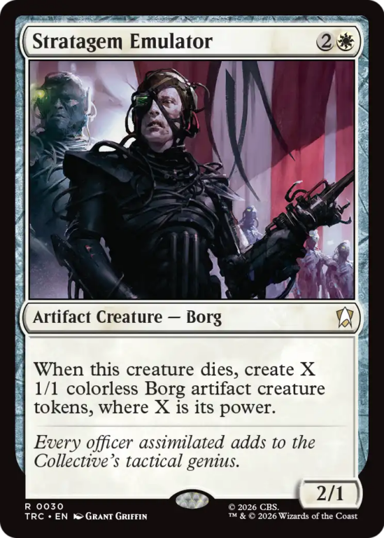
Credit: Wizards of the CoastStratagem Emulator
Saffgor: Cool payoff to powering up your Artifact Creatures, but not terribly exciting.
BPhillipYork: I feel like this is only okay because the Borg were really made a little bit weaker than they should be. Even the Star Trek T:NG card game had Borg that were X/X where X = the number of Borg, and all these Borg are kind of anemic.
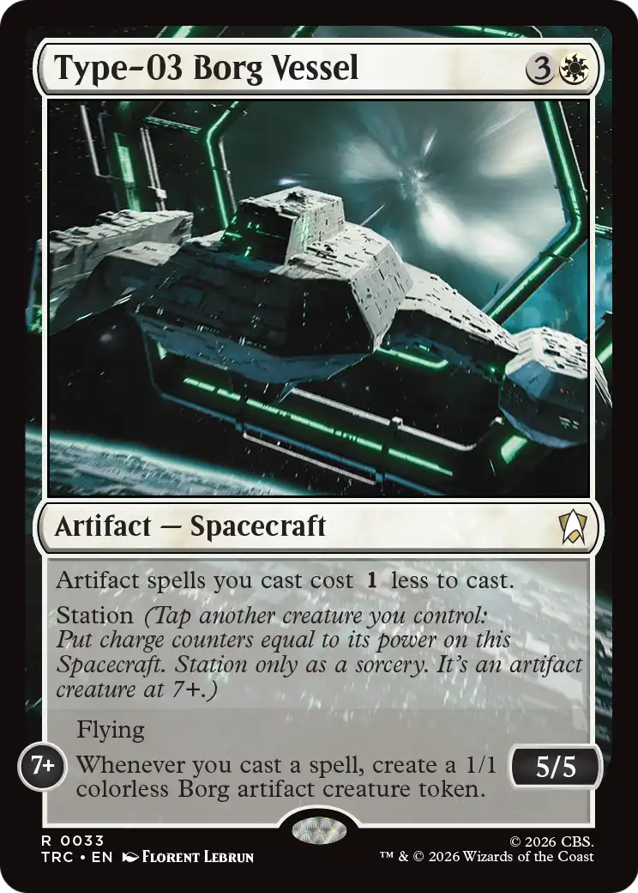
Credit: Wizards of the CoastType-03 Borg Vessel
Saffgor: This just seems like a slam dunk for decks already considering Foundry Inspector, and the fact literally all your spells come with a 1/1 after it's Stationed is strong. Any spell. 4 mana isn't exactly where you want to be, in terms of a discount piece/functional ramp, but that payoff isn't nothing.
BPhillipYork: This is decent enough for Borg decks. I can see it being run a lot just for artifact cost reduction, which hasn't been in white, though plenty of colorless. There are ways to fetch Spacecraft, at least a couple now, so it's tutorable in multiple ways, also creating 1/1 artifact creature tokens is nothing to sneeze at.
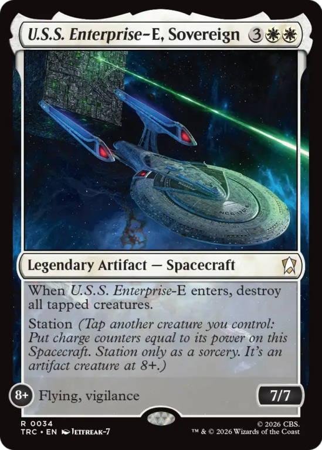
Credit: Wizards of the CoastU.S.S. Enterprise-E, Sovereign
Saffgor: Flickerable board wipe. If that has appeal, congrats, but I think 'board wipe typal' isn't something I'm especially keen on.
BPhillipYork: It makes me irrationally angry that this can just fight the Borg ship 1v1 and win. Like, yes, okay, in the movie under Picard's leadership the fleet targeted some special weak point on the Borg cube and it blew up, but that's because all the ships targeted it, not just the Enterprise, and the fight had been going on some time... oh well. It's a neat board wipe.
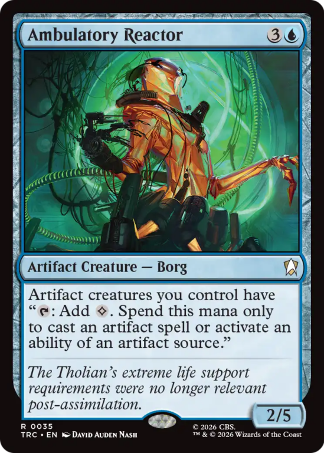
Credit: Wizards of the CoastAmbulatory Reactor
Saffgor: Grand Architect-ish, but given it's a tap ability that gets granted rather than tapping the actual Creature, Haste becomes necessary to many combos. On top of that, Grand Architect is 2 mana produced, not just 1, and arrives with a board buff, and costs 1 less. Maybe Grand Architect is just better guys, I don't know.
BPhillipYork: Nice to see some Borg that aren't humans. I mean, I know Star Trek did a decent job of retconning in the end of season 5 or so why all aliens in the galaxy were basically humans (wearing masks [focused on a single human emotion]) still neat to see it on the art.
Chief Miles O'Brien
Saffgor: Wild ass line of text to attach to this trigger, and as such it seems pretty good. Great way to get out of hand with all manner of Artifacts, including a number of extra turn combos.
BPhillipYork: You can definitely abuse this with certain artifacts or creatures, though if you are consistently drawing 2 cards on multiple players turns you should probably be doing something more interesting than putting counters on things.
Data, Exploring Humanity
Saffgor: A bit expensive at 5 mana (I know I extolled the Bounty earlier, but trust me), unless you have a way to trigger this the turn it comes down. This Data loves reflexive card draw triggers, like all the old 'draw a card next upkeep' cantrip effects, and can chain those together with relative ease in a high enough density, or with a draw doubler. Cooler than he looks!
BPhillipYork: This is a pretty strong, riffling through your deck casting stuff that casts 4 or less should be pretty good. So good, given how easy it is to have a Faerie Mastermind or something like that and maybe another trigger like a Ledger Shredder that it will let you basically blow our your deck.
Optimization Annex
Saffgor: Cheap body, good effect, not much else to say. In Charge counter decks, this is a shoo-in.
BPhillipYork: This is weirdly good for all kinds of Spacecraft decks, and probably not as useful for Borg. I guess you could be like assimilating all the ships or something, as a theme.
Seven of Nine, Tertiary Adjunct
Saffgor: I much prefer this iteration of Seven, and that tap ability is well worth trying to twiddle her for; you can take infinite turns, fuel up a Darksteel Reactor, or other nefarious activities, all while filtering through your deck.
BPhillipYork: Solid way to power up your spaceships and do card selection.
Temporal Tribulation
Saffgor: This being 'permanents' is quite strong, and assures you get at worst 2 Landfall triggers. Sure, the return is slow, but in something like Princess Yue it's a slam dunk.
BPhillipYork: This is fine, kind of weird it has flashback and not beam me up, in the Star Trek set, but oh well.
Transwarp Hub
Saffgor: Awesome thing to flicker, and Stationing it up is pretty easy, so you don't mind if the Charge counters fall off.
Tuvok, Chief Tactical Officer
Saffgor: Deeply funny mechanism by which you can control combat, but calling this effect 'good' is generous. It's a fun gotcha, but not strong.
BPhillipYork: Stuff like this is kind of mean, lets you force a swing somewhere someone didn't want it, and with combat tricks can lead to multiple things dying, but also makes you unpopular. But other than the surprise, it doesn't seem that good.
Voq, Torchbearer
Saffgor: It's a hair more expensive than Activated Sleeper, but can become something that didn't die this turn. Fair trade off, and a great new color for true Body Double effects.
BPhillipYork: This is another copy a graveyard card, which is fine, Klingon whatever, haven't seen a lot of support for any kind of Klingon deck, which is kind of sad.
Next Time: The Set’s Red & Green Cards
That wraps up our look at the White, Blue, and Black cards of Star Trek. We’ll be back later this week to wrap our review up with the remaining cards.
Have any questions or feedback? Drop us a note in the comments below or email us at contact@goonhammer.com. Want articles like this linked in your inbox every Monday morning? Sign up for our newsletter. And don’t forget that you can support us on Patreon for backer rewards like early video content, Administratum access, an ad-free experience on our website, and more.Originally published on Goonhammer.


Leave a Comment